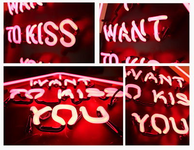

About us
‘Art Electric inc’ is an Art based project concieved when London Artist Zoe Grace and Dublin Designer John Morrissey came together. Zoe’s clever use of old discarded road signs and worn out Estate Agent banners to ‘re-purpose’ them into pieces of Art with positive messages and put back on the streets of London for anybody to find. Combine this with John’s design work in Neon, FunFair style lighting, Timber, Acrylic, and metal.With the added difficulty of both of them being in different Countries the outline Plan was to try and trade ideas back and forth using Zoe’s conceptual messages as a base and John’s knowledge of Design and Construction. What they have created is some beautiful and unusual pieces of Art made with Neon, Lightboxes and 3D Funfair Style Letters or Shapes. It is Art of course, But it’s Electric Art. If you are looking for a one off/bespoke piece get in touch.
Some Links
Check out some of our other adventures. www.nonfictiongraphics.com www.muther.me
